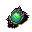

ボーブル Bauble
英語版 CrawlWiki の記事「Bauble」(0.33 向け、2025-11-05 版)の翻訳です。原文の著者は編集履歴をご覧ください。
この記事は 0.33 の時点の内容で、最新の 0.34 とは違うところがあるかもしれません。
ボーブルは消耗品で、発動(V)すると一時的に決まった姿に変身する。タリスマンとちがって、使うのにかかるのは 1.0 ターンだけだ。
ボーブルの一覧
| タイル | 名前 | 最小スキル | 最大スキル | 説明 |
|---|---|---|---|---|
 |
フラックス・ボーブル | 5 | 14 | 体が不安定になり、近接攻撃を当てた相手を汚染する。回避が上がり、変身術のスキルが高いほど上がり幅が大きい。武器、盾、胴鎧、手袋が融合する。 |

変更履歴
- ボーブルは 0.33 で、フラックス・ボーブルの登場とともに追加された。